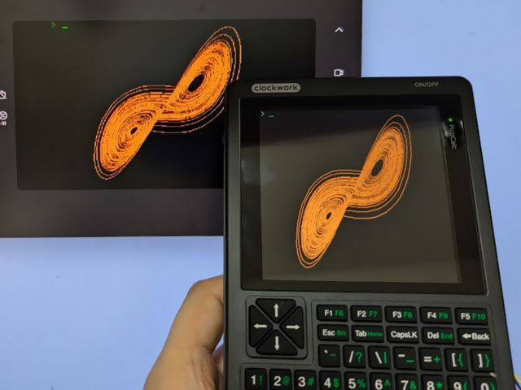

Capturing Screen of PicoCalc

Using LcdTap-Pico2 Universal
Connection
| LcdTap (Pico2) | PicoCalc (Pico/Pico2) |
|---|---|
| GND | GND |
| GPIO0 (RST) | GPIO15 (LCD_RST) |
| GPIO1 (CS) | GPIO13 (SPI1_CS) |
| GPIO2 (SCLK) | GPIO10 (SPI1_SCK) |
| GPIO3 (MOSI) | GPIO11 (SPI1_MOSI) |
| GPIO4 (DC) | GPIO14 (LCD_DC) |
Configuration
Load the "PicoCalc" preset or import the following settings via the Web I/F.
{
"config": {
"ctrlFamily": 0,
"busInterface": 1,
"buffWidth": 320,
"buffHeight": 320,
"trimMode": 0,
"flipMode": 1,
"inverted": true,
"swapRB": true,
"forcePwrOn": false,
"intfFmtOvr": -1,
"outputRot": 0,
"scaleMode": 2
}
}